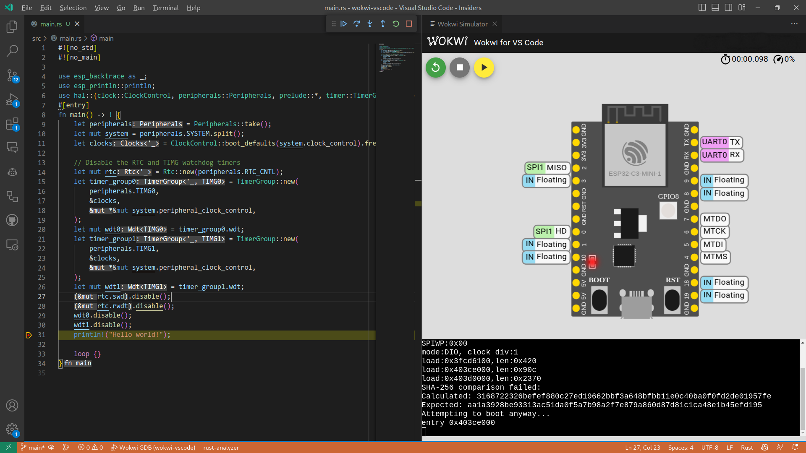

Introduction
The goal of this book is to provide a comprehensive guide on using the Rust Programming Language with Espressif devices.
Rust support for these devices is still a work in progress, and progress is being made rapidly. Because of this, parts of this documentation may be out of date or change dramatically between readings.
For tools and libraries relating to Rust on ESP, please see the esp-rs organization on GitHub. This organization is managed by employees of Espressif as well as members of the community.
A Note on Device Support
The contents of this book apply to the ESP32 series of devices only; this includes:
- ESP32 Series
- ESP32 C-Series
- ESP32 S-Series
- ESP32 H-Series
The ESP8266 series is outside the scope of this book. Rust support for the ESP8266 series is limited and is not being officially supported by Espressif.
Who This Book is For
This book is intended for people with some experience with Rust, and also assumes rudimentary knowledge of embedded development and electronics. For those without prior experience, we recommend first reading the Assumptions and Prerequisites and Other Resources sections to get up to speed.
Assumptions and Prerequisites
- You are comfortable using the Rust Programming Language, and have written and run applications in a desktop environment.
- You should be familiar with the idioms of the 2021 edition, as this book targets Rust 2021.
- You are comfortable developing embedded systems in another language such as C or C++, and are familiar with concepts such as:
- Cross-compilation
- Common digital interfaces like
UART,SPI,I²C, etc. - Memory-mapped peripherals
- Interrupts
Other Resources
If you are unfamiliar or less experienced with anything mentioned above, or if you would just like more information about a particular topic mentioned in this book, you may find these resources helpful.
| Resource | Description |
|---|---|
| The Rust Programming Language | If you are not familiar with Rust we recommend reading this book first. |
| The Embedded Rust Book | Here you can find several other resources provided by Rust's Embedded Working Group. |
| The Embedonomicon | The nitty-gritty details when doing embedded programming in Rust. |
| Embedded Rust on Espressif | Training material created in cooperation with Ferrous Systems. |
Translations
This book is currently available in English only. Once the contents of the book stabilize somewhat, we plan on translating the book into additional languages. As translations become available, this section will be updated to include them.
How to Use This Book
This book generally assumes that you are reading it front-to-back; content covered in later chapters may not make sense without context from previous chapters.
Contributing to This Book
The work on this book is coordinated in this repository.
If you have trouble following the instructions in this book or find that some section of the book is not clear enough or hard to follow, then that's a bug, and it should be reported in the issue tracker of this book.
Pull requests fixing typos and adding new content are very welcome!
Re-using This Material
This book is distributed under the following licenses:
- The code samples and freestanding Cargo projects contained within this book are licensed under the terms of both the MIT License and the Apache License v2.0.
- The written prose, pictures, and diagrams contained within this book are licensed under the terms of the Creative Commons CC-BY-SA v4.0 license.
TL;DR: If you want to use our text or images in your work, you need to:
- Give the appropriate credit (i.e. mention this book on your slide, and provide a link to the relevant page)
- Provide a link to the CC-BY-SA v4.0 licence
- Indicate if you have changed the material in any way, and make any changes to our material available under the same licence
Please do let us know if you find this book useful!
Ecosystem Overview
There are the following approaches to using Rust on Espressif chips:
- Using the
stdlibrary, a.k.a. Standard library. - Using the
corelibrary (no_std), a.k.a. bare metal development.
Both approaches have their advantages and disadvantages, so you should make a decision based on your project's needs. This chapter contains an overview of the two approaches:
See also the comparison of the different runtimes in The Embedded Rust Book.
The esp-rs organization on GitHub is home to a number of repositories related to running Rust on Espressif chips. Most of the required crates have their source code hosted here.
A note on the repository naming convention
In the esp-rs organization we use the following wording:
- Repositories starting with
esp-idf-are focused onstdapproach. E.g.esp-idf-hal- Repositories starting with
esp-are focused onno_stdapproach. E.g.esp-halIt is easy to remember as follows:
no_stdworks on top of bare metal, soesp-is an Espressif chipstd, apart from bare metal, also needs an additional layer, which isesp-idf-
Support for Espressif Products
Notes:
- ✅ - The feature is implemented or supported
- ⏳ - The feature is under development
- ❌ - The feature is not supported
| Chip | std | no_std |
|---|---|---|
| ESP32 | ✅ | ✅ |
| ESP32-C2 | ✅ | ✅ |
| ESP32-C3 | ✅ | ✅ |
| ESP32-C6 | ✅ | ✅ |
| ESP32-S2 | ✅ | ✅ |
| ESP32-S3 | ✅ | ✅ |
| ESP32-H2 | ✅ | ⏳ |
| ESP8266 | ❌ | ✅ |
The products supported in certain circumstances will be called supported Espressif products throughout the book.
As of now, the Espressif products supported by the esp-idf framework are the ones supported for Rust std development. For details on different versions of esp-idf and support of Espressif chips, see this table.
Using the Standard Library (std)
Espressif provides a C-based development framework called esp-idf which has, or will have, support for all Espressif chips starting with the ESP32; note that this framework does not support the ESP8266. See also Support for Espressif Products.
esp-idf, in turn, provides a newlib environment with enough functionality to build the Rust standard library (std) on top of it. This is the approach that is being taken to enable std support on ESP devices.
Current Support
As of now, the Espressif products supported by the esp-idf framework are the ones supported for Rust std development.
When using std, you have access to a lot of features that exist in esp-idf, including threads, mutexes and other synchronization primitives, collections, random number generation, sockets...
Relevant esp-rs crates
| Repository | Description |
|---|---|
| esp-rs/embedded-svc | Abstraction traits for embedded services (WiFi, Network, Httpd, Logging, etc.) |
| esp-rs/esp-idf-svc | An implementation of embedded-svc using esp-idf drivers. |
| esp-rs/esp-idf-hal | An implementation of the embedded-hal and other traits using the esp-idf framework. |
| esp-rs/esp-idf-sys | Rust bindings to the esp-idf development framework. Gives raw (unsafe) access to drivers, Wi-Fi and more. |
The aforementioned crates have interdependencies, and this relationship can be seen below.
graph TD;
esp-idf-hal --> esp-idf-sys & embedded-svc
esp-idf-svc --> esp-idf-sys & esp-idf-hal & embedded-svc
When you might want to use the Standard Library (std)
- Rich functionality: If your embedded system requires lots of functionality like support for networking protocols, file I/O, or complex data structures, you will likely want to use hosted-environment approach because std libraries provide a wide range of functionality that can be used to build complex applications relatively quickly and efficiently
- Portability: The
stdcrate provides a standardized set of APIs that can be used across different platforms and architectures, making it easier to write code that is portable and reusable. - Rapid development: The
stdcrate provides a rich set of functionality that can be used to build applications quickly and efficiently, without worrying, too much, about low-level details.
Developing on Bare Metal (no_std)
Using no_std may be more familiar to embedded Rust developers; it does not use std (the Rust standard library) but instead uses a subset, the core library. The Embedded Rust Book has a great section on this.
It's important to note that since no_std uses the Rust core library, a subset of the Rust standard library, a no_std crate can compile in std environment but the opposite is not true. Therefore, when creating crates it's worth keeping in mind if it needs the standard library to function.
Current support
The table below covers the current support for no_std at this moment for different Espressif products.
| HAL | Wi-Fi/BLE/ESP-NOW | Backtrace | Storage | |
|---|---|---|---|---|
| ESP32 | ✅ | ✅ | ✅ | ✅ |
| ESP32-C2 | ✅ | ✅ | ✅ | ✅ |
| ESP32-C3 | ✅ | ✅ | ✅ | ✅ |
| ESP32-C6 | ✅ | ✅ | ✅ | ✅ |
| ESP32-S2 | ✅ | ✅ | ✅ | ✅ |
| ESP32-S3 | ✅ | ✅ | ✅ | ✅ |
| ESP32-H2 | ⏳ | ⏳ | ✅ | ⏳ |
Note:
- ✅ in Wi-Fi/BLE/ESP-NOW means that the target supports, at least, one of the listed technologies. For details, see Current support table of the esp-wifi repository.
- ESP8266 HAL is in maintenance mode and no further development will be done for this chip.
Relevant esp-rs crates
| Repository | Description |
|---|---|
| esp-rs/esp-hal | Hardware abstraction layer |
| esp-rs/esp-pacs | Peripheral access crates |
| esp-rs/esp-wifi | Wi-Fi, BLE and ESP-NOW support |
| esp-rs/esp-alloc | Simple heap allocator |
| esp-rs/esp-println | print!, println! |
| esp-rs/esp-backtrace | Exception and panic handlers |
| esp-rs/esp-storage | Embedded-storage traits to access unencrypted flash memory |
When you might want to use bare metal (no_std)
- Small memory footprint: If your embedded system has limited resources and needs to have a small memory footprint, you will likely want to use bare-metal because
stdfeatures add a significant amount of final binary size and compilation time. - Direct hardware control: If your embedded system requires more direct control over the hardware, such as low-level device drivers or access to specialized hardware features you will likely want to use bare-metal because
stdadds abstractions that can make it harder to interact directly with the hardware. - Real-time constraints or time-critical applications: If your embedded system requires real-time performance or low-latency response times because
stdcan introduce unpredictable delays and overhead that can affect real-time performance. - Custom requirements: bare-metal allows more customization and fine-grained control over the behavior of an application, which can be useful in specialized or non-standard environments.
Setting Up a Development Environment
At the moment, Espressif SoCs are based on two different architectures: RISC-V and Xtensa. Both architectures support std and no_std approaches.
To set up the development environment, do the following:
- Install Rust
- Install requirements based on your target(s)
As mentioned in the installation procedures below, for std development also don't forget to install std Development Requirements.
Please note that you can host the development environment in a container.
Install Rust
Make sure you have Rust installed. If not, see the instructions on the rustup website.
When using Windows, make sure you have installed one of the ABIs listed below. For more details, see the Windows chapter in The rustup book.
- MSVC: Recommended ABI, included in the list of
rustupdefault requirements. Use it for interoperability with the software produced by Visual Studio. - GNU: ABI used by the GCC toolchain. Install it yourself for interoperability with the software built with the MinGW/MSYS2 toolchain.
Warning: When using Unix based systems, installing Rust via a system package manager (e.g.
brew,apt,dnf, etc.) can result in various issues and incompatibilities, so it's best to use rustup instead.
See also alternative installation methods.
RISC-V targets only
To build Rust applications for the Espressif chips based on RISC-V architecture, do the following:
-
Install the
nightlytoolchain with therust-srccomponent:rustup toolchain install nightly --component rust-src
- Set the target:
-
For
no_std(bare-metal) applications, run:rustup target add riscv32imc-unknown-none-elf # For ESP32-C2 and ESP32-C3 rustup target add riscv32imac-unknown-none-elf # For ESP32-C6 and ESP32-H2This target is currently Tier 2; note the different flavors of
riscv32target in Rust covering differentRISC-Vextensions. -
For
stdapplications:Since this target is currently Tier 3, it does not have pre-built objects distributed through
rustupand, unlike theno_stdtarget, nothing needs to be installed. Refer to the *-esp-idf section of the rustc book for the correct target for your device.riscv32imc-esp-espidffor MCUs which do not support atomics, like ESP32-C2 and ESP32-C3riscv32imac-esp-espidffor MCUs which support atomics, like ESP32-C6, ESP32-H2, and ESP32-P4
-
- To build
stdprojects, you also need to install:LLVMcompiler infrastructure- Other
stddevelopment requirements - In your project's file
.cargo/config.toml, add the unstable Cargo feature-Z build-std. Our template projects that are discussed later in this book already include this.
Now you should be able to build and run projects on the Espressif's RISC-V chips.
RISC-V and Xtensa targets
espup is a tool that simplifies installing and maintaining the components required to develop Rust applications for the Xtensa and RISC-V architectures.
1. Install espup
To install espup, run:
cargo install espup
You can also directly download pre-compiled release binaries or use cargo-binstall.
2. Install neccesary toolchains
Install all the necessary tools to develop Rust applications for all supported Espressif targets by running:
espup install
Note:
stdapplications require installing additional software covered instdDevelopment Requirements
3. Set up the environment variables
espup will create an export file that contains some environment variables required to build projects.
On Windows (%USERPROFILE%\export-esp.ps1)
- There is no need to execute the file for Windows users. It is only created to show the modified environment variables.
On Unix based systems ($HOME/export-esp.sh). There are different ways of sourcing the file:
-
Source this file in every terminal:
- Source the export file:
. $HOME/export-esp.sh
This approach requires running the command in every new shell.
- Source the export file:
-
Create an alias for executing the
export-esp.sh:- Copy and paste the following command to your shell’s profile (
.profile,.bashrc,.zprofile, etc.):alias get_esprs='. $HOME/export-esp.sh' - Refresh the configuration by restarting the terminal session or by running
source [path to profile], for example,source ~/.bashrc.
This approach requires running the alias in every new shell.
- Copy and paste the following command to your shell’s profile (
-
Add the environment variables to your shell's profile directly:
- Add the content of
$HOME/export-esp.shto your shell ’s profile:cat $HOME/export-esp.sh >> [path to profile], for example,cat $HOME/export-esp.sh >> ~/.bashrc. - Refresh the configuration by restarting the terminal session or by running
source [path to profile], for example,source ~/.bashrc.
This approach does not require any sourcing. The
export-esp.shscript will be sourced automatically in every shell. - Add the content of
What espup Installs
To enable support for Espressif targets, espup installs the following tools:
- Espressif Rust fork with support for Espressif targets
nightlytoolchain with support forRISC-VtargetsLLVMfork with support forXtensatargets- GCC toolchain that links the final binary
The forked compiler can coexist with the standard Rust compiler, allowing both to be installed on your system. The forked compiler is invoked when using any of the available overriding methods.
Note: We are making efforts to upstream our forks
- Changes in
LLVMfork. Already in progress, see the status in this tracking issue.- Rust compiler forks. If
LLVMchanges are accepted, we will proceed with the Rust compiler changes.
Other installation methods for Xtensa targets
- Using esp-rs/rust-build installation scripts. This was the recommended way in the past, but now the installation scripts are feature frozen, and all new features will only be included in
espup. See the repository README for instructions. - Building the Rust compiler with
Xtensasupport from source. This process is computationally expensive and can take one or more hours to complete depending on your system. It is not recommended unless there is a major reason to go for this approach. Here is the repository to build it from source: esp-rs/rust repository.
std Development Requirements
Regardless of the target architecture, make sure you have the following required tools installed to build std applications:
python: Required by ESP-IDFgit: Required by ESP-IDFldproxybinary crate: A tool that forwards linker arguments to the actual linker that is also given as an argument toldproxy. Install it by running:cargo install ldproxy
The std runtime uses ESP-IDF (Espressif IoT Development Framework) as hosted environment but, users do not need to install it. ESP-IDF is automatically downloaded and installed by esp-idf-sys, a crate that all std projects need to use, when building a std application.
Using Containers
Instead of installing directly on your local system, you can host the development environment inside a container. Espressif provides the idf-rust image that supports both RISC-V and Xtensa target architectures and enables both std and no_std development.
You can find numerous tags for linux/arm64, and linux/amd64 platforms.
For each Rust release, we generate the tag with the following naming convention:
<chip>_<rust-toolchain-version>- For example,
esp32_1.64.0.0contains the ecosystem for developingstd, andno_stdapplications forESP32with the1.64.0.0Xtensa Rust toolchain.
- For example,
There are special cases
<chip>can beallwhich indicates compatibility with all Espressif targets<rust-toolchain-version>can belatestwhich indicates the latest release of theXtensaRust toolchain
Depending on your operating system, you can choose any container runtime, such as Docker, Podman, or Lima.
Writing Your Own Application
With the appropriate Rust compiler and toolchain installed, you're now ready to create an application.
You can write an application in the following ways:
- Generate from a template: (Strongly recommended). Gives you a configured project, saves time and prevents possible errors.
- Start from scratch using Cargo: Requires more expertise since you need to configure several parts of the project.
Note: Starting a project with Cargo does not provide any advantage, only mentioned here since it's the usual way of generating a project in Rust.
This chapter won't cover the instructions on how to create a project from scratch with cargo, it will only focus on generating a project from template project.
During this chapter, we will use some tools that will be covered in more details in the next chapter, Tooling, feel free to peek into it when required.
Generating Projects from Templates
We currently maintain two template repositories:
- esp-template -
no_stdtemplate. - esp-idf-template -
stdtemplate.
Both templates are based on cargo-generate, a tool that allows you to create a new project based on some existing template. In our case esp-idf-template or esp-template can be used to generate an application with all the required configuration and dependencies.
-
Install
cargo generate:cargo install cargo-generate -
Generate a project based in one of the templates:
- esp-template:
See Understanding esp-template for more details on the template project.cargo generate -a esp-rs/esp-template - esp-idf-template:
See Understanding esp-idf-template for more details on the template project.cargo generate esp-rs/esp-idf-template cargo
When the
cargo generatesubcommand is invoked, you will be prompted to answer a number of questions regarding the target of your application. Upon completion of this process, you will have a buildable project with all the correct configuration. - esp-template:
-
Build/Run the generated project:
- Using
cargo buildwill compile the project using the appropriate toolchain and target. - Using
cargo runwill compile the project, flash it, and open a serial monitor with our chip.
- Using
Using Dev Containers in the templates
Both template repositories have a prompt for Dev Containers support, when using Dev Containers in the templates it will add support for:
Dev Containers use the idf-rust container image, that was explained in the Using Container section of the installation chapter, and provide an environment ready to develop Rust applications for Espressif chips with no installation required. Dev Containers also have integration with Wokwi simulator, to simulate the project, and allow flashing from the container using web flash.
For more details on Dev Containers, see Dev Container section of the template README.
Understanding esp-template
Now that we know how to generate a no_std project, let's inspect what the generated project contains and try to understand every part of it.
Inspecting the generated Project
When creating a project from esp-template with the following answers:
- Which MCU to target? ·
esp32c3 - Use template default values? ·
true
For this explanation we will use the default values, if you want further modifications, see the additional prompts when not using default values.
It should generate a file structure like this:
├── .cargo
│ └── config.toml
├── src
│ └── main.rs
├── .gitignore
├── Cargo.toml
├── LICENSE-APACHE
├── LICENSE-MIT
└── rust-toolchain.toml
Before going further, let's see what these files are for.
- .cargo/config.toml
- The Cargo configuration
- This defines a few options to correctly build the project
- Contains
runner = "espflash flash --monitor"- this means you can just usecargo runto flash and monitor your code
- src/main.rs
- The main source file of the newly created project
- For details, see the
main.rssection below.
- .gitignore
- Tells
gitwhich folders and files to ignore
- Tells
- Cargo.toml
- The usual Cargo manifest declaring some meta-data and dependencies of the project
- LICENSE-APACHE, LICENSE_MIT
- Those are the most common licenses used in the Rust ecosystem
- If you want to apply a different license, you can delete these files and change the license in
Cargo.toml
- rust-toolchain.toml
- Defines which Rust toolchain to use
- The toolchain will be
nightlyorespdepending on your target.
- The toolchain will be
- Defines which Rust toolchain to use
main.rs
#![no_std]
#![no_main]
use esp_backtrace as _;
use esp_println::println;
use hal::{clock::ClockControl, peripherals::Peripherals, prelude::*, timer::TimerGroup, Rtc};
#[entry]
fn main() -> ! {
let peripherals = Peripherals::take();
let system = peripherals.SYSTEM.split();
let clocks = ClockControl::boot_defaults(system.clock_control).freeze();
// Disable the RTC and TIMG watchdog timers
let mut rtc = Rtc::new(peripherals.RTC_CNTL);
let timer_group0 = TimerGroup::new(peripherals.TIMG0, &clocks);
let mut wdt0 = timer_group0.wdt;
let timer_group1 = TimerGroup::new(peripherals.TIMG1, &clocks);
let mut wdt1 = timer_group1.wdt;
rtc.swd.disable();
rtc.rwdt.disable();
wdt0.disable();
wdt1.disable();
println!("Hello world!");
loop {}
}That is quite a lot of code. Let's see what it is good for.
#![no_std]- This tells the Rust compiler that this code doesn't use
libstd
- This tells the Rust compiler that this code doesn't use
#![no_main]- The
no_mainattribute says that this program won't use the standard main interface, which is tailored for command-line applications that receive arguments. Instead of the standard main, we'll use the entry attribute from theriscv-rtcrate to define a custom entry point. In this program, we have named the entry pointmain, but any other name could have been used. The entry point function must be a diverging function. I.e. it has the signaturefn foo() -> !; this type indicates that the function never returns – which means that the program never terminates.
- The
use esp_backtrace as _;- Since we are in a bare-metal environment, we need a panic-handler that runs if a panic occurs in code
- There are a few different crates you can use (e.g
panic-halt) butesp-backtraceprovides an implementation that prints the address of a backtrace - together withespflash/espmonitorthese addresses can get decoded into source code locations
use esp_println::println;- Provides
println!implementation
- Provides
use hal:{...}- We need to bring in some types we are going to use
- These are from
esp-hal
let peripherals = Peripherals::take().unwrap();- HAL drivers usually take ownership of peripherals accessed via the PAC
- Here we take all the peripherals from the PAC to pass them to the HAL drivers later
let system = peripherals.SYSTEM.split();- Sometimes a peripheral (here the System peripheral) is coarse-grained and doesn't exactly fit the HAL drivers - so here we split the System peripheral into smaller pieces which get passed to the drivers
let clocks = ClockControl::boot_defaults(system.clock_control).freeze();- Here we configure the system clocks - in this case, we are fine with the defaults
- We freeze the clocks, which means we cannot change them later
- Some drivers need a reference to the clocks to know how to calculate rates and durations
- The next block of code instantiates some peripherals (namely RTC and the two timer groups) to disable the watchdog, which is armed after boot
- Without that code, the SoC would reboot after some time
- There is another way to prevent the reboot: feeding the watchdog
println!("Hello world!");- Prints "Hello Wolrd!"
loop {}- Since our function is supposed to never return, we just "do nothing" in a loop
Running the Code
Building and running the code is as easy as
cargo run
This builds the code according to the configuration and executes espflash to flash the code to the board.
Since our runner configuration also passes the --monitor argument to espflash we can see what the code is printing.
Make sure that you have
espflashinstalled, otherwise this step will fail. To installespflash:cargo install espflash
You should see something similar to this:
[2023-04-17T14:17:08Z INFO ] Serial port: '/dev/ttyACM0'
[2023-04-17T14:17:08Z INFO ] Connecting...
[2023-04-17T14:17:09Z INFO ] Using flash stub
[2023-04-17T14:17:09Z WARN ] Setting baud rate higher than 115,200 can cause issues
Chip type: esp32c3 (revision v0.3)
Crystal frequency: 40MHz
Flash size: 4MB
Features: WiFi, BLE
MAC address: 60:55:f9:c0:39:7c
App/part. size: 203,920/4,128,768 bytes, 4.94%
[00:00:00] [========================================] 13/13 0x0
[00:00:00] [========================================] 1/1 0x8000
[00:00:01] [========================================] 64/64 0x10000 [2023-04-17T14:17:11Z INFO ] Flashing has completed!
Commands:
CTRL+R Reset chip
CTRL+C Exit
ESP-ROM:esp32c3-api1-20210207
Build:Feb 7 2021
rst:0x15 (USB_UART_CHIP_RESET),boot:0xc (SPI_FAST_FLASH_BOOT)
Saved PC:0x40380816
0x40380816 -
at ??:??
SPIWP:0xee
mode:DIO, clock div:2
load:0x3fcd5820,len:0x16ec
0x3fcd5820 - _stack_start
at ??:??
load:0x403cc710,len:0x95c
0x403cc710 -
at ??:??
load:0x403ce710,len:0x2dc0
0x403ce710 -
at ??:??
SHA-256 comparison failed:
Calculated: 692c10f3e7d531666ff34d02d3da161b3daa41ea629010d031fe3706fbada122
Expected: 9fafed52ab0387e903bde368d0d6bfffe0dcc3d2f90dca069a4db891108c387c
Attempting to boot anyway...
entry 0x403cc710
0x403cc710 -
at ??:??
I (43) boot: ESP-IDF v5.0-beta1-764-gdbcf640261 2nd stage bootloader
I (43) boot: compile time 11:30:26
I (43) boot: chip revision: V003
I (46) boot.esp32c3: SPI Speed : 40MHz
I (51) boot.esp32c3: SPI Mode : DIO
I (56) boot.esp32c3: SPI Flash Size : 4MB
I (61) boot: Enabling RNG early entropy source...
I (66) boot: Partition Table:
I (70) boot: ## Label Usage Type ST Offset Length
I (77) boot: 0 nvs WiFi data 01 02 00009000 00006000
I (84) boot: 1 phy_init RF data 01 01 0000f000 00001000
I (92) boot: 2 factory factory app 00 00 00010000 003f0000
I (99) boot: End of partition table
I (103) esp_image: segment 0: paddr=00010020 vaddr=3c030020 size=05f74h ( 24436) map
I (117) esp_image: segment 1: paddr=00015f9c vaddr=40380000 size=007f8h ( 2040) load
I (121) esp_image: segment 2: paddr=0001679c vaddr=00000000 size=0987ch ( 39036)
I (137) esp_image: segment 3: paddr=00020020 vaddr=42000020 size=21c40h (138304) map
I (168) boot: Loaded app from partition at offset 0x10000
I (168) boot: Disabling RNG early entropy source...
Hello world!
What you see here are messages from the first and second stage bootloader, and then ... our "Hello World" message!
And that is exactly what the code is doing.
You can reboot with CTRL+R or exit with CTRL+C.
Understanding esp-idf-template
Now that we know how to generate a std project, let's inspect what the generated project contains and try to understand every part of it.
Inspecting the generated Project
When creating a project from esp-idf-template with the following answers:
- Which MCU to target? ·
esp32c3 - Use template default values? ·
true
For this explanation we will use the default values, if you want further modifications, see the additional prompts when not using default values.
It should generate a file structure like this:
├── .cargo
│ └── config.toml
└── src
└── main.rs
├── .gitignore
├── build.rs
├── Cargo.toml
├── rust-toolchain.toml
├── sdkconfig.defaults
Before going further, let's see what these files are for.
- .cargo/config.toml
- The Cargo configuration
- Contains our target
- Contains
runner = "espflash flash --monitor"- this means you can just usecargo runto flash and monitor your code - Contains the linker to use, in our case,
ldproxy - Contains the unstable
build-stdcargo feature enabled. - Contains the
ESP-IDF-VERSIONenvironment variable that tellsesp-idf-syswhich ESP-IDF version the project will use.
- src/main.rs
- The main source file of the newly created project
- For details, see the
main.rssection below.
- .gitignore
- Tells
gitwhich folders and files to ignore
- Tells
- build.rs
- Propagates linker arguments for
ldproxy.
- Propagates linker arguments for
- Cargo.toml
- The usual Cargo manifest declaring some meta-data and dependencies of the project
- rust-toolchain.toml
- Defines which Rust toolchain to use
- The toolchain will be
nightlyorespdepending on your target.
- The toolchain will be
- Defines which Rust toolchain to use
- sdkconfig.defaults
- Contains the overridden values from the ESP-IDF defaults.
main.rs
use esp_idf_sys as _; // If using the `binstart` feature of `esp-idf-sys`, always keep this module imported
fn main() {
// It is necessary to call this function once. Otherwise some patches to the runtime
// implemented by esp-idf-sys might not link properly. See https://github.com/esp-rs/esp-idf-template/issues/71
esp_idf_sys::link_patches();
println!("Hello, world!");
}The first line is an import that defines the esp-idf entry-point when the root crate is a binary crate that defines a main function.
Then, we have a usual main function with a few lines on it:
- A call to
esp_idf_sys::link_patchesfunction that makes sure that a few patches to the ESP-IDF which are implemented in Rust are linked to the final executable. - We print on our console the famous "Hello World!".
Running the Code
Building and running the code is as easy as
cargo run
This builds the code according to the configuration and executes espflash to flash the code to the board.
Since our runner configuration also passes the --monitor argument to espflash we can see what the code is printing.
Make sure that you have
espflashinstalled, otherwise this step will fail. To installespflash:cargo install espflash
You should see something similar to this:
[2023-04-18T08:05:09Z INFO ] Connecting...
[2023-04-18T08:05:10Z INFO ] Using flash stub
[2023-04-18T08:05:10Z WARN ] Setting baud rate higher than 115,200 can cause issues
Chip type: esp32c3 (revision v0.3)
Crystal frequency: 40MHz
Flash size: 4MB
Features: WiFi, BLE
MAC address: 60:55:f9:c0:39:7c
App/part. size: 478,416/4,128,768 bytes, 11.59%
[00:00:00] [========================================] 13/13 0x0
[00:00:00] [========================================] 1/1 0x8000
[00:00:04] [========================================] 227/227 0x10000 [2023-04-18T08:05:15Z INFO ] Flashing has completed!
Commands:
CTRL+R Reset chip
CTRL+C Exit
ESP-ROM:esp32c3-api1-20210207
Build:Feb 7 2021
rst:0x15 (USB_UART_CHIP_RESET),boot:0xc (SPI_FAST_FLASH_BOOT)
Saved PC:0x40380816
0x40380816 - esp_restart_noos
at /home/sergio/Documents/Espressif/tests/esp-rust-app/.embuild/espressif/esp-idf/release-v4.4/components/esp_system/port/soc/esp32c3/system_internal.c:106
SPIWP:0xee
mode:DIO, clock div:2
load:0x3fcd5820,len:0x16ec
0x3fcd5820 - _bss_end
at ??:??
load:0x403cc710,len:0x95c
0x403cc710 - _iram_data_start
at ??:??
load:0x403ce710,len:0x2dc0
0x403ce710 - _iram_data_start
at ??:??
SHA-256 comparison failed:
Calculated: 692c10f3e7d531666ff34d02d3da161b3daa41ea629010d031fe3706fbada122
Expected: 9fafed52ab0387e903bde368d0d6bfffe0dcc3d2f90dca069a4db891108c387c
Attempting to boot anyway...
entry 0x403cc710
0x403cc710 - _iram_data_start
at ??:??
I (43) boot: ESP-IDF v5.0-beta1-764-gdbcf640261 2nd stage bootloader
I (43) boot: compile time 11:30:26
I (43) boot: chip revision: V003
I (46) boot.esp32c3: SPI Speed : 40MHz
I (51) boot.esp32c3: SPI Mode : DIO
I (56) boot.esp32c3: SPI Flash Size : 4MB
I (61) boot: Enabling RNG early entropy source...
I (66) boot: Partition Table:
I (70) boot: ## Label Usage Type ST Offset Length
I (77) boot: 0 nvs WiFi data 01 02 00009000 00006000
I (84) boot: 1 phy_init RF data 01 01 0000f000 00001000
I (92) boot: 2 factory factory app 00 00 00010000 003f0000
I (99) boot: End of partition table
I (103) esp_image: segment 0: paddr=00010020 vaddr=3c050020 size=23b88h (146312) map
I (144) esp_image: segment 1: paddr=00033bb0 vaddr=3fc8a000 size=00cd8h ( 3288) load
I (145) esp_image: segment 2: paddr=00034890 vaddr=40380000 size=09ea0h ( 40608) load
I (160) esp_image: segment 3: paddr=0003e738 vaddr=00000000 size=018e0h ( 6368)
I (161) esp_image: segment 4: paddr=00040020 vaddr=42000020 size=44c88h (281736) map
I (231) boot: Loaded app from partition at offset 0x10000
I (231) boot: Disabling RNG early entropy source...
I (242) cpu_start: Pro cpu up.
I (251) cpu_start: Pro cpu start user code
I (251) cpu_start: cpu freq: 160000000
I (251) cpu_start: Application information:
I (254) cpu_start: Project name: libespidf
I (259) cpu_start: App version: 1
I (264) cpu_start: Compile time: Apr 18 2023 10:04:01
I (270) cpu_start: ELF file SHA256: 0000000000000000...
I (276) cpu_start: ESP-IDF: 424ddb3-dirty
I (281) cpu_start: Min chip rev: v0.3
I (286) cpu_start: Max chip rev: v0.99
I (291) cpu_start: Chip rev: v0.3
I (295) heap_init: Initializing. RAM available for dynamic allocation:
I (303) heap_init: At 3FC8BC00 len 00050B10 (322 KiB): DRAM
I (309) heap_init: At 3FCDC710 len 00002950 (10 KiB): STACK/DRAM
I (315) heap_init: At 50000020 len 00001FE0 (7 KiB): RTCRAM
I (323) spi_flash: detected chip: generic
I (327) spi_flash: flash io: dio
I (331) sleep: Configure to isolate all GPIO pins in sleep state
I (337) sleep: Enable automatic switching of GPIO sleep configuration
I (344) cpu_start: Starting scheduler.
Hello, world!
As you can see, there are messages from the first and second stage bootloader and then, our "Hello, world!" is printed.
You can reboot with CTRL+R or exit with CTRL+C.
Writing no_std applications
If you want to learn how to develop no_std application, there is training developed for this:
The training is based on ESP32-C3-DevKit-RUST-1. You can use any other Espressif development board but code changes and configuration changes might be needed.
The training contains:
- Introductory level examples:
Note that there are several examples covering the use of specific peripherals under the examples' folder of every SoC
esp-hal. E.g.esp32c3-hal/examples
Writing std applications
If you want to learn how to develop std application, there is a training developed
alongside Ferrous Systems:
The training is based on ESP32-C3-DevKit-RUST-1. You can use any other Espressif development board, but code changes and configuration changes might be needed.
The training is split into two parts:
Note that there are several examples covering the use of specific peripherals under the examples' folder of
esp-idf-hal. I.e.esp-idf-hal/examples.
Tooling
Now that we have our required dependencies installed, and we know how to generate a template project, we will cover, in more detail, some of the tools that will make developing Rust applications for ESP targets a lot easier.
Visual Studio Code
One of the more common development environments is Microsoft's Visual Studio Code text editor along with the Rust Analyzer extension.
Visual Studio Code is an open-source and cross-platform graphical text editor with a rich ecosystem of extensions. The Rust Analyzer extension provides an implementation of the Language Server Protocol for Rust and additionally includes features like autocompletion, go-to definition, and more.
Visual Studio Code can be installed via most popular package managers, and installers are available on the official website. The Rust Analyzer extension can be installed in Visual Studio Code via the built-in extension manager.
Alongside Rust Analyzer (RA), there are other extensions that might be very helpful:
- Even Better TOML for editing TOML-based configuration files
- crates to help manage Rust dependencies
Tips and Tricks
If you are developing for a target that does not have std support, Rust Analyzer can behave strangely, often reporting various errors. This can be resolved by creating a .vscode/settings.json file in your project and populating it with the following:
{
"rust-analyzer.checkOnSave.allTargets": false
}
If you are using a custom toolchain, as you would with Xtensa targets, you can provide some hints to cargo via the rust-toolchain.toml file to improve the user experience:
[toolchain]
channel = "esp"
components = ["rustfmt", "rustc-dev"]
targets = ["xtensa-esp32-none-elf"]
Other IDEs
There are other IDEs like CLion or vim that also have pretty good support for Rust, but we won't be covering them here.
espflash
espflash provides a serial flasher utility for Espressif SoCs and modules based on esptool.py.
The esp-rs/espflash repository contains two crates, cargo-espflash and espflash. You can find more information on both of these in their respective sections below and in their corresponding README.
A note on
espflashandcargo-espflash.The
espflashandcargo-espflashcommands shown below, assume that version2.0or greater.
cargo-espflash
Provides a subcommand for cargo that handles cross-compilation and flashing.
To install:
cargo install cargo-espflash
This command must be run within a Cargo project, ie. a directory containing a Cargo.toml file. For example, to build an example named 'blinky', flash the resulting binary to a device, and then subsequently start a serial monitor:
cargo espflash flash --example=blinky --monitor
For more information, please see the cargo-espflash README.
espflash
Provides a standalone command-line application that flashes an ELF file to a device.
To install:
cargo install espflash
Assuming you have built an ELF binary by other means already, espflash can be used to download it to your device and monitor the serial port. For example, if you have built the getting-started/blinky example from esp-idf using idf.py you might run something like:
espflash flash build/blinky --monitor
For more information, please see the espflash README.
espflash can be used as a Cargo runner by adding the following to your project's .cargo/config.toml file:
[target.'cfg(any(target_arch = "riscv32", target_arch = "xtensa"))']
runner = "espflash flash --monitor"
With this configuration, you can flash and monitor your application using cargo run.
Debugging
Debugging Rust applications is also possible using different tools that will be covered in this chapter.
Refer to the table below to see which chip is supported in every debugging method:
| probe-rs | openODC | VS Code | |
|---|---|---|---|
| ESP32 | ❌ | ✅ | ✅ |
| ESP32-C2 | ✅ | ✅ | ✅ |
| ESP32-C3 | ✅ | ✅ | ✅ |
| ESP32-C6 | ✅ | ✅ | ✅ |
| ESP32-H2 | ✅ | ✅ | ✅ |
| ESP32-S2 | ❌ | ✅ | ✅ |
| ESP32-S3 | ❌ | ✅ | ✅ |
probe-rs
The probe-rs project is a set of tools to interact with embedded MCU's using various debug probes. It is similar to openOCD, PyOCD, Segger tools, etc. There is support for ARM & RISC-V architectures along with a collection of tools, including but not limited to:
- Debugger
- GDB support.
- CLI for interactive debugging.
- VSCode extension.
- RTT (Real Time Transfer)
- Similar to app_trace component of IDF.
- Flashing algorithms
More info about probe-rs & how to set up a project can be found on the probe-rs website.
USB-JTAG-SERIAL peripheral for ESP32-C3
Starting from probe-rs v0.12, it is possible to flash and debug the ESP32-C3 with the built-in USB-JTAG-SERIAL peripheral, no need for any external hardware debugger. More info on configuring the interface can be found in the official documentation.
Support for Espressif chips
probe-rs currently only supports ARM & RISC-V, therefore this limits the number of Espressif chips that can be used at the moment.
| Chip | Flashing | Debugging |
|---|---|---|
| ESP32-C3 | ✅ | ⚠️ |
Note: Items marked with ⚠️ are currently work in progress, usable but expect bugs.
Permissions - Linux
On Linux, you may run into permission issues trying to interact with Espressif probes. Installing the following udev rules and reloading should fix that issue.
# Espressif dev kit FTDI
ATTRS{idVendor}=="0403", ATTRS{idProduct}=="6010", MODE="660", GROUP="plugdev", TAG+="uaccess"
# Espressif USB JTAG/serial debug unit
ATTRS{idVendor}=="303a", ATTRS{idProduct}=="1001", MODE="660", GROUP="plugdev", TAG+="uaccess"
# Espressif USB Bridge
ATTRS{idVendor}=="303a", ATTRS{idProduct}=="1002", MODE="660", GROUP="plugdev", TAG+="uaccess"
OpenOCD
Similar to probe-rs, OpenOCD does not have support for the Xtensa architecture. However, Espressif does maintain a fork of OpenOCD under espressif/openocd-esp32 which has support for Espressif's chips.
Instructions on how to install openocd-esp32 for your platform can be found in the Espressif documentation.
Setup for Espressif chips
Once installed, it's as simple as running openocd with the correct scripts. For chips with the built-in USB JTAG, there is normally a config that will work out of the box, for example on the ESP32-C3:
openocd -f board/esp32c3-builtin.cfg
For other configurations it may require specifying the chip and the interface separately, for example, ESP32 with a J-Link:
openocd -f interface/jlink.cfg -f target/esp32.cfg
Debugging in Visual Studio Code
There is also a possibility to debug with graphical output directly in Visual Studio Code.
ESP32
Hardware Setup
ESP32 doesn't have a built-in JTAG interface, so you have to connect an external JTAG adapter to the ESP32 board, for example, ESP-Prog can be used.
| ESP32 Pin | JTAG Signal |
|---|---|
| MTDO/GPIO15 | TDO |
| MTDI/GPIO12 | TDI |
| MTCK/GPIO13 | TCK |
| MTMS/GPIO14 | TMS |
| 3V3 | VJTAG |
| GND | GND |
Note: On Windows USB Serial Converter A 0403 6010 00 driver should be WinUSB.
Set up VSCode
- Install Cortex-Debug extension for VScode.
- Create the
.vscode/launch.jsonfile in the project tree you want to debug. This can be used as a template file. - Update executable, svdFile, serverpath paths, and toolchainPrefix field.
{
// Use IntelliSense to learn about possible attributes.
// Hover to view descriptions of existing attributes.
// For more information, visit: https://go.microsoft.com/fwlink/?linkid=830387
"version": "0.2.0",
"configurations": [
{
// more info at: https://github.com/Marus/cortex-debug/blob/master/package.json
"name": "Attach",
"type": "cortex-debug",
"request": "attach", // attach instead of launch, because otherwise flash write is attempted, but fails
"cwd": "${workspaceRoot}",
"executable": "target/xtensa-esp32-none-elf/debug/.....",
"servertype": "openocd",
"interface": "jtag",
"svdFile": "../../esp-pacs/esp32/svd/esp32.svd",
"toolchainPrefix": "xtensa-esp32-elf",
"openOCDPreConfigLaunchCommands": ["set ESP_RTOS none"],
"serverpath": "C:/Espressif/tools/openocd-esp32/v0.11.0-esp32-20220411/openocd-esp32/bin/openocd.exe",
"configFiles": ["board/esp32-wrover-kit-3.3v.cfg"],
"overrideAttachCommands": [
"set remote hardware-watchpoint-limit 2",
"mon halt",
"flushregs"
],
"overrideRestartCommands": ["mon reset halt", "flushregs", "c"]
}
]
}
ESP32-C3
Older versions with revision < 3 don't have built-in JTAG interface.
ESP32-C3 with revision 3 does have a built-in JTAG interface, and you don't have to connect an external device to be able to debug. To get the chip revision, run the cargo espflash board-info command.
Hardware Setup
If your ESP32-C3's revision is lesser than 3, follow these instructions, if you have revision 3 you can jump to the Set up VSCode step.
ESP32-C3 revision 1 and revision 2 don't have a built-in JTAG interface, so you have to connect an external JTAG adapter to the ESP32-C3 board, for example, ESP-Prog can be used.
| ESP32-C3 Pin | JTAG Signal |
|---|---|
| MTDO/GPIO7 | TDO |
| MTDI/GPIO5 | TDI |
| MTCK/GPIO6 | TCK |
| MTMS/GPIO4 | TMS |
| 3V3 | VJTAG |
| GND | GND |
Note: On Windows USB Serial Converter A 0403 6010 00 driver should be WinUSB.
Set up VSCode
- Install Cortex-Debug extension for VScode.
- Create the
.vscode/launch.jsonfile in the project tree you want to debug. This can be used as a template file. - Update executable, svdFile, serverpath paths, and toolchainPrefix field.
{
// Use IntelliSense to learn about possible attributes.
// Hover to view descriptions of existing attributes.
// For more information, visit: https://go.microsoft.com/fwlink/?linkid=830387
"version": "0.2.0",
"configurations": [
{
// more info at: https://github.com/Marus/cortex-debug/blob/master/package.json
"name": "Attach",
"type": "cortex-debug",
"request": "attach", // attach instead of launch, because otherwise flash write is attempted, but fails
"cwd": "${workspaceRoot}",
"executable": "target/riscv32imc-unknown-none-elf/debug/examples/usb_serial_jtag", //
"servertype": "openocd",
"interface": "jtag",
"svdFile": "../../esp-pacs/esp32c3/svd/esp32c3.svd",
"toolchainPrefix": "riscv32-esp-elf",
"openOCDPreConfigLaunchCommands": ["set ESP_RTOS none"],
"serverpath": "C:/Espressif/tools/openocd-esp32/v0.11.0-esp32-20220411/openocd-esp32/bin/openocd.exe",
"configFiles": ["board/esp32c3-builtin.cfg"],
"overrideAttachCommands": [
"set remote hardware-watchpoint-limit 2",
"mon halt",
"flushregs"
],
"overrideRestartCommands": ["mon reset halt", "flushregs", "c"]
}
]
}
Simulating
Simulating projects can be very handy. It allows users to test projects using CI, try projects without having hardware available, and many other scenarios.
At the moment, there are a few ways of simulating Rust projects on Espressif chips, all of them have some limitations, but it's quickly evolving and getting better every day.
In this chapter, we will discuss the different ways of simulation that are available.
Refer to the table below to see which chip is supported in every simulating method:
| Wokwi | QEMU | |
|---|---|---|
| ESP32 | ✅ | ✅ |
| ESP32-C2 | ❌ | ❌ |
| ESP32-C3 | ✅ | ❌ |
| ESP32-C6 | ❌ | ❌ |
| ESP32-H2 | ❌ | ❌ |
| ESP32-S2 | ✅ | ❌ |
| ESP32-S3 | ✅ | ❌ |
Wokwi
Wokwi is an online simulator that supports simulating Rust projects (both std and no_std) in ESP Chips,
see wokwi.com/rust for a list of examples and a way to start new projects.
Wokwi offers Wi-Fi simulation, Virtual Logic Analyzer, and GDB debugging among many other features, see Wokwi documentation for more details. For ESP chips, there is a table of simulation features that are currently supported.
Using Wokwi for VS Code extension
Wokwi offers a VS Code extension that allows users to simulate their project directly from your code editor by only adding a few files. For more information, see Wokwi documentation. You can also debug your code using the VS Code debugger, see Debugging your code.
When using any of the templates and not using the default values, there is a prompt (Configure project to support Wokwi simulation with Wokwi VS Code extension?) that generates the required files to use Wokwi VS Code extension.

Using wokwi-server
wokwi-server is a CLI tool for launching a Wokwi simulation of your project. I.e., it allows you to build a project on your machine, or in a container, and simulate the resulting binary.
wokwi-server also allows simulating your resulting binary on other Wokwi projects, with more hardware parts other than the chip itself. See the corresponding section of the wokwi-server README for detailed instructions.
Custom chips
Wokwi allows generating custom chips that let you program the behavior of a component not supported in Wokwi. For more details, see the official Wokwi documentation.
Custom chips can also be written in Rust! See Wokwi Custom Chip API for more information. E.g: custom inverter chip written in Rust.
QEMU
Espressif maintains a fork of QEMU in espressif/QEMU with the necessary patches to make it work on Espressif chips. See the QEMU wiki for instructions on how to build QEMU and emulate projects with it.
Once you have built QEMU, you should have qemu-system-xtensa.
Running our project using QEMU
NOTE: Only ESP32 is currently supported, so make sure you are compiling for
xtensa-esp32-espidftarget.
For running our project in QEMU, we need a firmware/image with bootloader and partition table merged in it.
We can use cargo-espflash to generate it:
cargo espflash save-image --chip esp32 --merge <OUTFILE> --release
If you prefer to use
espflash, you can achieve the same result by building the project first and then generating image:cargo build --release espflash save-image --merge ESP32 target/xtensa-esp32-espidf/release/<NAME> <OUTFILE>
Now, run the image in QEMU:
/path/to/qemu-system-xtensa -nographic -machine esp32 -drive file=<OUTFILE>,if=mtd,format=raw
Troubleshooting
Here, we will present a list of common errors that may appear when building a project alongside the reason and a solution to them.
Environment variable LIBCLANG_PATH not set
thread 'main' panicked at 'Unable to find libclang: "couldn't find any valid shared libraries matching: ['libclang.so', 'libclang-*.so', 'libclang.so.*', 'libclang-*.so.*'], set the `LIBCLANG_PATH` environment variable to a path where one of these files can be found (invalid: [])"', /home/esp/.cargo/registry/src/github.com-1ecc6299db9ec823/bindgen-0.60.1/src/lib.rs:2172:31
We need libclang for bindgen to generate the Rust bindings to the ESP-IDF C headers.
Make sure you have sourced the export file generated by espup, see Set up the environment variables.
Missing ldproxy
error: linker `ldproxy` not found
|
= note: No such file or directory (os error 2)
If you are trying to build a std application ldproxy must be installed. See std Development Requirements
cargo install ldproxy
Using a wrong Rust toolchain
$ cargo build
error: failed to run `rustc` to learn about target-specific information
Caused by:
process didn't exit successfully: `rustc - --crate-name ___ --print=file-names --target xtensa-esp32-espidf --crate-type bin --crate-type rlib --crate-type dylib --crate-type cdylib --crate-type staticlib --crate-type proc-macro --print=sysroot --print=cfg` (exit status: 1)
--- stderr
error: Error loading target specification: Could not find specification for target "xtensa-esp32-espidf". Run `rustc --print target-list` for a list of built-in targets
If you are encountering the previous error or a similar one, you are probably not using the proper Rust toolchain, remember that for Xtensa targets, you need to use Espressif Rust fork toolchain, there are several ways to do it:
- A toolchain override shorthand used on the command-line:
cargo +esp. - Set
RUSTUP_TOOLCHAINenvironment variable toesp. - Set a directory override:
rustup override set esp - Add a rust-toolchain.toml file to you project:
[toolchain] channel = "esp" - Set
espas default toolchain.
For more information on toolchain overriding, see the Overrides chapter of The rustup book.
Windows
Long path names
When using Windows, you may encounter issues building a new project if using long path names. Follow these steps to substitute the path of your project:
subst r: <pathToYourProject>
cd r:\
Missing ABI
Compiling cc v1.0.69
error: linker `link.exe` not found
|
= note: The system cannot find the file specified. (os error 2)
note: the msvc targets depend on the msvc linker but `link.exe` was not found
note: please ensure that VS 2013, VS 2015, VS 2017 or VS 2019 was installed with the Visual C++ option
error: could not compile `compiler_builtins` due to previous error
warning: build failed, waiting for other jobs to finish...
error: build failed
The reason for this error is that we are missing the MSVC C++, hence we are not meeting the Compile-time Requirements, please install Visual Studio 2013 (or later) or the Visual C++ Build Tools 2019. For Visual Studio, make sure to check the "C++ tools" and "Windows 10 SDK" options. If using GNU ABI, install MinGW/MSYS2 toolchain.
FAQ
I updated my sdkconfig.defaults file but it doesn't appear to have had any effect
You must clean your project and rebuild for changes in the sdkconfig.defaults to take effect:
cargo clean
cargo build
The documentation for the crates mentioned on this page is out of date or missing
Due to the resource limits imposed by docs.rs, internet access is blocked while building documentation and as such we are unable to build the documentation for esp-idf-sys or any crate depending on it.
Instead, we are building the documentation and hosting it ourselves on GitHub Pages:
***ERROR*** A stack overflow in task main has been detected.
If the second-stage bootloader reports this error, you likely need to increase the stack size for the main task. This can be accomplished by adding the following to the sdkconfig.defaults file:
CONFIG_ESP_MAIN_TASK_STACK_SIZE=7000
In this example, we are allocating 7kB for the main task's stack.
How can I completely disable the watchdog timer(s)?
Add to your sdkconfig.defaults file:
CONFIG_INT_WDT=n
CONFIG_ESP_TASK_WDT=n
Recall that you must clean your project before rebuilding when modifying these configuration files.